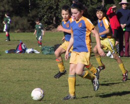

| Match Report - 25 July 2009 |
|
|
|
|
|
|
|
| U6 Purple |
North Ryde 1 - Holy Cross College 10

|
|
|
|
All of the parents had a giggle together at the start of this game, watching the
opposition being drilled in warm up to do their push ups. Far too serious and
regimented for us!
The purple team showed better signs of concentration today and good centre line ups.
Our goal today was a brilliant long range kick. Everyone did a really great job and
played well as a team. Coach Marc tried some set plays today and the team found the
new techniques useful to manoeuvre the ball.
Congratulations to the Player of the Week - Will

- Sally Last (Supermum)
|
|
|
| U6 Red C |
North Ryde Red C - Putney Rangers A

|
|
|
|
We played good. We scored some goals. I got the medal and Luke got the trophy.
- Martin Sellar (Player, aged 6)
|
|
|
|
|
|
The clear blue skies and winter sunshine were a welcome sight at Morrison Bay this
morning compared to the gloomy conditions and torrential rain that drenched our
players when they faced their top-ranked Normanhurst rivals at the same grounds
a few weeks ago. The spectacle was made complete with goal posts that actually had
nets attached and the parents of both the North Ryde and Saints United sides that
crowded the sidelines in preparation for their usual forty minutes of Saturday
morning stress and entertainment.
And entertainment is what they got, certainly in the first ten to fifteen minutes of
play as North Ryde put together their best display of fluid and quick-paced teamwork
all season. The ball was moved from the back to the front of the field at lightning
pace in a series of quick and simple passes that left Saints rooted to the ground
and which made the whole game of football look incredibly simple.
Tom Maclean and Jett were
particularly effective in defence, shutting down any form of attack with terrific
speed and efficiency to quickly change the course of play back in North Ryde's favour.
Patrick showed good skill in stopping the incoming ball in
it's tracks, shifting it out of reach of his attackers and passing it unselfishly to
the next player in the chain. Harrison completed the
defensive outfit with some good tackles and had no problems gaining 20 or 30 metres
of real estate when his foot got some purchase on the ball.
Jack wore the keeper gloves in the first half, but only had
to deal with a couple of soft shots on goal - which he did with class and diligence -
due to the impenetrable line of defence in front of him.
David was in excellent form in the right midfield and
accounted for many of the goal-scoring opportunities in the first half, keeping his
body upright and selecting the best moment to make his cross into the goalmouth.
Eli chased the ball hard on the left wing, never giving the
Saints a moment's rest as he ferreted the ball with unrelenting determination to claim
the 50-50 wins. Shannon and Adam
were the final links in the chain to score North Ryde's three goals within the first
ten minutes of the game. Adam gave the Saints keeper no chance when he sank a great
shot in the nets off his left boot, and Shannon using his favourite - and highly
effective - touch, turn and go manoeuvre to bypass the defence and score.
But it was the passing game that was key in those first few minutes of the match that
gave North Ryde the edge that Saints were unable to recover from. In their previous
 encounter, North Ryde hung on to the ball a just a smidgen too long and gave the
Saints defence the time they needed to move in for the tackle and effectively disrupt
an otherwise good attacking move. But today the passes were being made after one or
two touches, removing Saints from the picture altogether, and it couldn't have taken
more than 6 - 8 seconds for the ball to move in a controlled fashion from the backs
to the forwards. The sort of play that all parents on the sidelines dream of before
every game.
encounter, North Ryde hung on to the ball a just a smidgen too long and gave the
Saints defence the time they needed to move in for the tackle and effectively disrupt
an otherwise good attacking move. But today the passes were being made after one or
two touches, removing Saints from the picture altogether, and it couldn't have taken
more than 6 - 8 seconds for the ball to move in a controlled fashion from the backs
to the forwards. The sort of play that all parents on the sidelines dream of before
every game.
North Ryde did not find the same level of success in the second half as they did in
the first, however, and seemed to fall back to some of their old habits of hogging
the ball a bit too long again. Long enough to be tackled and end an otherwise useful
attacking stroke. Saints United, to their credit, gave a stronger account of
themselves in the second half, particularly in defence, and North Ryde were unable
to add to their 3-goal tally of the first half.
They did try though, and the ratio of attempts on goal must have been in the region
of five to one. Shannon had retired his striker duties for the keeper's gloves but
was never really put to the test all throughout the second half. The North Ryde
defence was as rock-solid as it had been in the first half, but some of the polish
had come off the team's general passing game which saw many an attacking opportunity
go begging, and the finishing off in front of the goal was a bit lacklustre.
The rather flat second half, however, can not take away from this young div 1 team
the terrific game of football they played today. They had no substitutes all match,
and their level of fitness can only be compared to the level of determination they
had to win the ball and appease their competitive spirit. They continue to live up
to their own expectations, and, of course, the stress-laden expectations of their
parents on the sidelines
The penny hasn't dropped just yet, but it has started to fall
- Mark Howard
|
|
|
|
|
|
This was a re-scheduled game from Week 1. It was a hard game with a couple of players
still recovering from their winter ailments. Oscar had two attempts at goal, and there
were a lot of good passes from Sam and Peter.
Andrhea showed character as she took on some of the big Glenhaven boys. Matt and Peter
managed great clearance kicks in defence.
Glenhaven led by 4 goals to nil at the break. They kicked powerful shots from various
angles and Ryan had a tough job as goalkeeper between the North Ryde posts.
The coach gave some helpful advice at halftime which usually helps the team to perform
better. In the second half, Matthew worked hard to ward off further attacks on the
North Ryde goals.
Young Hamish dribbled the ball with some fancy footwork. Rhea, Oscar and Sam worked in
a triangular fashion and managed to make a few shots on goal, but by the final whistle
Glenhaven had won the game by 7 goals to nil.
The Player of the Week award went to Sam and the overall award went to Matthew. The
team needs more training especially since there hasn't been any for the past 2 weeks.
- Mandy Van (Manager)
|
|
|
|
|
|
With the holidays behind us, and with a fully squad ready to roar, it was back to
the serious matter of kicking back on a Saturday morning to enjoy watching the blue
& yellows run round.
For the first half of the opening term, we seemed to be right on top.
Benyad was right at home in his 'newish' position of
centre back. His right boot has really come along well this season and he is one
of our better kickers!
Brooke was happy to be goalie in the first half and she
repaid the coach for putting confidence in her with some lovely saves.
Against the run of play, WPH popped in a couple of goals,
but we were not discouraged with Luke and
Massie doing some lovely dribbling runs and
Luke hitting the post with one attempt on goal.
The second half was end to end stuff. Maggie was getting
right into the thick of things up front following the ball all the way to their goalie
and 'player of the match' Lucy was outstanding showing off
those new skills of passing and chasing!
Thomas and Chris were again
tireless in attack and defence with Saxon quickly turning
into a very reliable defender making his presence felt with some great tackles and
tireless chasing.
The second half we found ourselves quickly down another goal, but our super mid

fielder come striker Massie slotted a terrific goal and
we were in with a sniff.
All the players responded splendidly to the coach's request of trying not to be so
polite on the field - as we are often guilty of that dreadful sin and the bain of any
coaches plans called 'ball watching'.
This week there were some real go-getters who were getting in there for those 50/50
balls. Julian, Timmy and
Ben were getting right in there and even won a few of these
challenges.
Second half volunteer goalie Josh was very diligent in
carrying out his duties and kept the crowd entertained!
In the end we simply ran out of time, but we were far from disgraced. All the players
have improved markedly - especially in the getting there and getting 'angry' for the
ball.
Special thanks to Tony for the constant juggling of the (4)
subs on the side line. Each week, all players get a fair go and Tony makes this very
tricky job look easy in shuffling the troops.
- Andrew Curdie (Coach)
|